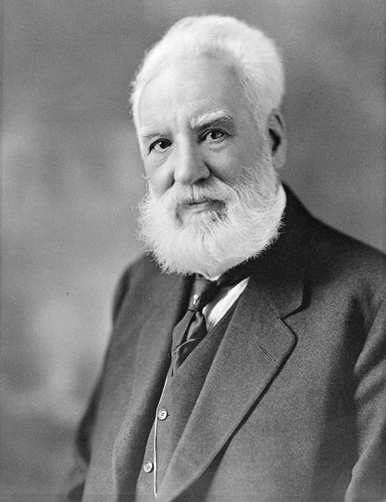

Un aparato del profesor Bell transmite la palabra hablada de un cuarto a otro
«Señor Watson, venga aquí, quiero verlo», dijo el profesor Alexander Graham Bell ante su aparato, y su ayudante, con el receptor pegado al oído en el cuarto contiguo, oyó la frase entera y acudió corriendo. El telégrafo acaba de aprender a hablar.

En un desván de la calle Exeter que hace las veces de laboratorio, el profesor Alexander Graham Bell logró hoy lo que perseguía desde hace años: que un alambre lleve, no señales, sino la voz misma. Inclinado sobre su transmisor, pronunció una frase de lo más doméstica: «Mr. Watson, come here, I want to see you»; señor Watson, venga aquí, quiero verlo. En el cuarto vecino, con la puerta cerrada, su ayudante Thomas Watson escuchaba con el receptor apretado al oído: oyó las palabras, distintas y enteras, y llegó corriendo a repetirlas. Los dos hombres pasaron el resto de la jornada cambiando de cuarto y de papel, hablándole al aparato y anotando cada sílaba que el alambre entregaba.
El inventor tiene veintinueve años, nació en Escocia y no es electricista de oficio sino profesor de fisiología vocal y maestro de sordomudos, hijo y nieto de maestros del habla. De ese oficio viene todo: quien ha estudiado cómo la voz es vibración comprende que un alambre no necesita entender la palabra, sino apenas temblar como ella. Su aparato hace exactamente eso: la voz hace vibrar una membrana, la membrana gobierna una corriente eléctrica que ondula como la propia onda sonora, y en el otro extremo el proceso se invierte y la corriente vuelve a hacerse voz. Hace apenas tres días la oficina de patentes le concedió el privilegio de invención.
Bell no buscaba al principio hacer hablar al alambre, sino multiplicarlo: como tantos, perseguía un telégrafo armónico capaz de llevar varios mensajes a la vez por notas musicales distintas, empresa en la que lo sostienen con su dinero el abogado Hubbard y el comerciante Sanders, padres de dos de sus alumnos sordos. En junio del año pasado, un accidente le mostró el camino: una lengüeta del aparato, pulsada por Watson en una sala, sonó en la otra con su timbre entero, prueba de que el alambre podía llevar algo más rico que puntos y rayas. Desde entonces los dos hombres persiguen la voz por las noches, terminadas las clases del profesor.
No faltan sombras de pleito: el mismo día en que Bell presentó su solicitud, otro inventor, el señor Elisha Gray, de Chicago, depositó en la misma oficina el anuncio de un aparato parlante de diseño semejante, y los abogados ya afilan las plumas. Del día de hoy quedará también la anécdota: cuentan que la primera llamada de la historia fue casi un pedido de auxilio, pues el profesor se habría volcado ácido de las pilas sobre la ropa en el momento de llamar a su ayudante; el cuaderno del laboratorio, más seco, registra apenas la frase y la hora. Sea como fuere, el alambre la llevó.
Hace treinta y dos años este diario dio cuenta del primer mensaje del telégrafo del señor Morse, que enseñó a la noticia a correr más rápido que el caballo; lo de hoy es otra vuelta de la misma tuerca, y acaso más honda, porque ya no viaja la señal sino todo lo que hay de una persona en su voz. Los escépticos llamarán juguete a este aparato, y algo de razón tendrán mientras sólo hable de un desván a un cuarto. Pero quede para los años venideros el asombro que hoy apenas se deja escribir: el día en que dos ciudades conversen como dos vecinos por sobre la cerca, se acordarán de esta tarde de marzo en Boston.